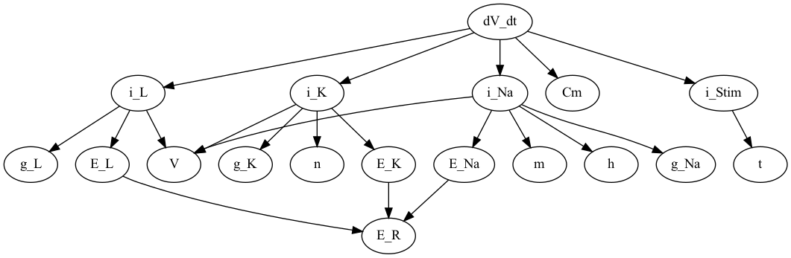

Demo¶
In this demo we will demonstrate how you can use the python API to visualize the dependencies in the Hodgkin Huxley model of the squid axon from 1952. This model is taken from https://models.cellml.org/workspace/hodgkin_huxley_1952 and converted to a gotran .ode file using gotran and the cellml2gotran script
First we make the necessary imports
import gotran
import matplotlib.pyplot as plt
import networkx as nx
from modelgraph import DependencyGraph
and load the ode file
ode = gotran.load_ode("hodgkin_huxley_squid_axon_model_1952_original.ode")
Next we build the dependency graph
graph = DependencyGraph(ode)
and get the graph of the expressions that depends on the parameter g_Na
G_g_Na = graph.inv_dependency_graph("g_Na")
We plot this using matplotlib
nx.draw(G_g_Na, with_labels=True, font_size=10, node_size=2000)
plt.savefig("g_Na_mpl.png")

and using pydot
P_g_Na = nx.nx_pydot.to_pydot(G_g_Na)
P_g_Na.write_png("g_Na_pydot.png")

Finally we grab the graph of the dependencies of dV_dt
# Visualize what dV_dt depdens on
G_dV_dt = graph.dependency_graph("dV_dt")
# and visualize this using `pydot`
#
P_dV_dt = nx.nx_pydot.to_pydot(G_dV_dt)
P_dV_dt.write_png("dV_dt_pydot.png")
